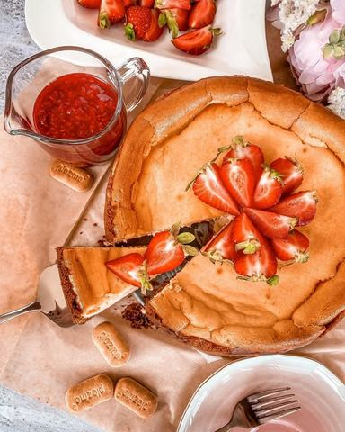

Moja beleška
SačuvanoDa li ste spremali zapečeni ciz..? Moj savet, pogledate sve tri fotke, pa se usudite da ne napravite 😅 Ukus je jako specifičan, prija istančanom nepcu i definitivno je za ljubitelje sirastih dezerata.. U osnovnoj varijanti je fin, a kada mu dodate voćni ili karamel preliv onda nastaje čarolija 💫💫💫
Sastojci
- Recept
- Za podlogu je potrebno
- Fil
Priprema
Promešajte mlevenu plazmu sa cimetom, pa dodajte otopljen puter. Ovom mrvičastom smesom ćete obloziti dno kao i ivice kalupa veličine 22 cm. Prethodno premazite ivice i dno puterom, pa postavite papir za pečenje. Odložite u frižider na hladjenje dok pravite fil. Prvo otopite belu čokoladu na pari ili postepeno u mikrotalasnoj, pa je ostavite kako bi se prohladila. Spojite krem sir, grčki jogurt, šećer u prahu i aromu vanile, mutite lagano mikserom, pa u toku mućenja dodajte jedno po jedno jaje. Na kraju dodajte prohladjenu, otopljenu belu čokoladu, sjedinite, pa izrucite u kalup. Rerna treba da bude zagrejana na 160C i kolač se peče otprilike sat vremena. Potom ga ostavite na hladjenju još nekih sat vremena pa odložite u frižider na par sati.. Savrseno ide uz šoljicu kafe ☺️ Prijatno 🌸
Originalni opis sa Instagrama
Zapečeni cheesecake sa plazmom i belom čokoladom🌸 Da li ste spremali zapečeni ciz..? Moj savet, pogledate sve tri fotke, pa se usudite da ne napravite 😅 Ukus je jako specifičan, prija istančanom nepcu i definitivno je za ljubitelje sirastih dezerata.. U osnovnoj varijanti je fin, a kada mu dodate voćni ili karamel preliv onda nastaje čarolija 💫💫💫 Recept: Za podlogu je potrebno: •250 gr mlevene plazme @plazma_zvanicna •125 gr putera •kašičica cimeta Fil: •600 gr ABC krem sira •100 gr grčkog jogurta •150 gr šećera u prahu •4 jaja •kašičica ekstrakta vanile •200 gr bele belgijske čokolade ••• Po ukusu ga možete prelivati voćnim prelivom ili domaćom karamelom, a taj izbor ostavite za svako parče ponaosob.. Priprema: Promešajte mlevenu plazmu sa cimetom, pa dodajte otopljen puter. Ovom mrvičastom smesom ćete obloziti dno kao i ivice kalupa veličine 22 cm. Prethodno premazite ivice i dno puterom, pa postavite papir za pečenje. Odložite u frižider na hladjenje dok pravite fil. Prvo otopite belu čokoladu na pari ili postepeno u mikrotalasnoj, pa je ostavite kako bi se prohladila. Spojite krem sir, grčki jogurt, šećer u prahu i aromu vanile, mutite lagano mikserom, pa u toku mućenja dodajte jedno po jedno jaje. Na kraju dodajte prohladjenu, otopljenu belu čokoladu, sjedinite, pa izrucite u kalup. Rerna treba da bude zagrejana na 160C i kolač se peče otprilike sat vremena. Potom ga ostavite na hladjenju još nekih sat vremena pa odložite u frižider na par sati.. Savrseno ide uz šoljicu kafe ☺️ Prijatno 🌸 • • • #čizkejk #receptzacheesecake #receptzatortu #newyorkstylecheesecake #idejezadezert #dezert #belacokolada #plazma #ukusnoilepo #soljicakafe #razgovor #vremejezauzivanje #enyojlittlethings